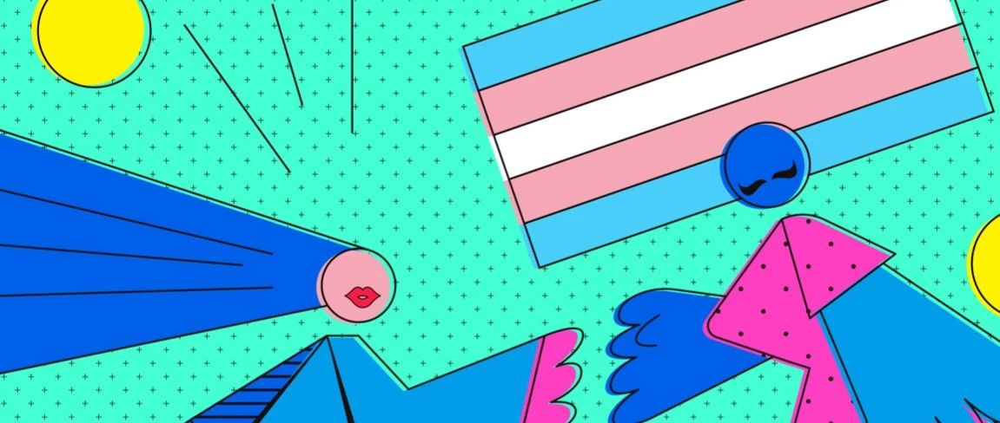
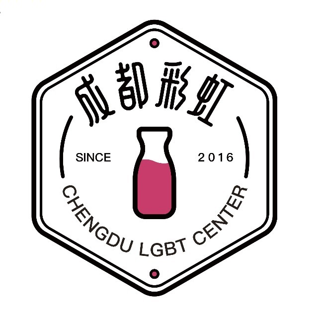

[转]活动预告丨我们的社群：成都跨性别社群第一次线下见面会
以下文章来源于成都彩虹 ，作者小羊

成都彩虹
.
「成都彩虹」创办于 2016 年，是成都青朴社会工作服务中心发起的社区项目，致力于用务实且多元的方式，改善同志的生存处境、消除同志遭受的歧视与不公平对待。
昨天我的人生朝一个方向行进，而今天却朝另一个方向。昨天，我相信我不可能做的事情，今天，我却做了。我们的生命不只是我们自己，子宫到坟墓，我们和其他人紧紧相连。我们的每一个选择，都会决定我们未来的重生。我们的生命和我们的选择，就像量子轨迹，在每一个交点上，每一次对彼此伸出的手都会温暖我们的人生。
——电影《云图》

活动缘起
很庆幸，大家都有被这首歌所打动，大家被跨性别伙伴的故事所感染。但也很无奈，这份「感动」仿佛丢进了水中央的小石子，泛起了浅浅的波纹后就消失了。

发起人

发起人有话说
我大概还记得很久很久以前的我自己，惴惴不安的坐在约定的地点想着那些网络中的头像和文字会对应一个什么样的人，又亦或是后来一个人走在各种陌生的城市的清晨与夜晚，怯懦于身份和更多的麻烦，更多是坐在窗口打自己的游戏，看自己的剧，到离开都没有认识更多的朋友。
活动详情
报名条件
报名方式

发起方：「成都彩虹」
合作宣传方：全国跨性别热线、跨性别在线、跨青年
跨儿心理、北京同志中心、云南平行
彩虹暴力终结所、贵州黔程工作组